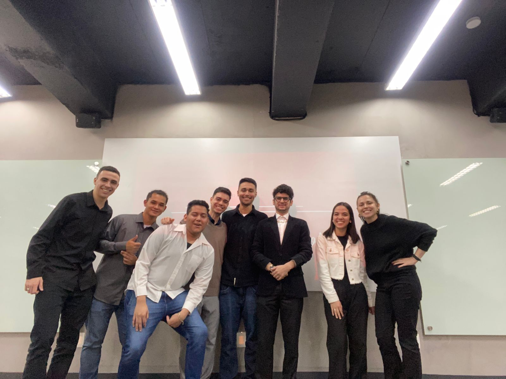
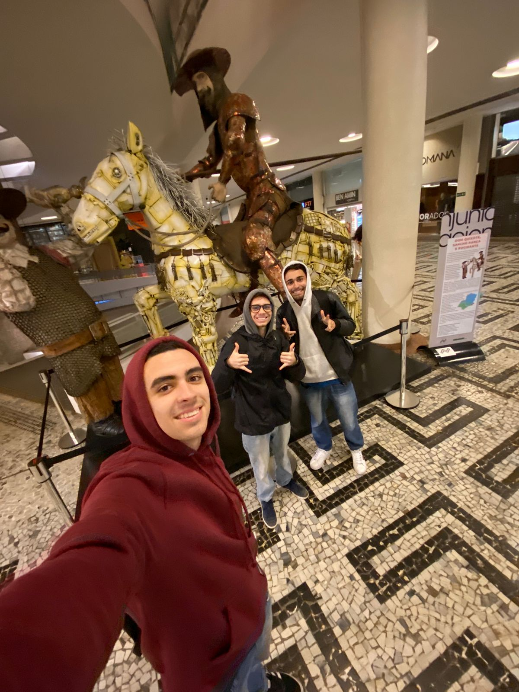

Agradecimentos
Gostaria de agradecer ao meu grupo que sempre esteve presente e
disposto a me judar caso fosse necessário, muito obrigado a todos
os eles pelos momentos, pelas risadas e pelas discontrações
durante esta caminhada, mas acima de tudo, muito obrigado por
todos vocês estarem aqui comigo. Nosso semestre não foi fácil, mas
eu tenho muito orgulho da equipe unida que nos tornamos e muito
orgulho do modo como lidamos com nossas dificuldades e desavenças
com o projeto, apesar da pressão nos mantivemos juntos para
concluir o semestre da melhor forma, uma ultima vez, muito
obrigado por estarem comigo nesse caminho. ♥
Queria também agradecer a esses dois aqui da foto, foram muitas
noites conversando e trabalhando no projeto, sou muito grato por
ter a amizade deles, desde que começamos a nos falar eles sempre
estiveram presentes para me ajudar com ideias e a me expor mais e
isso me ajudou muito, sem a ajuda deles minha jornada teria sido
muito mais difícil durante este semestre, foram muitas risadas,
conversas e tomadas de decisão sem contar as noites mal dormindas
tentando resolver problemas. Eles me ajudaram muito para que eu
pudesse concluir este site ta melhor forma possível, muito
obrigado por serem meus amigos. ♥
Família
Sou muito grato por todo o apoio que recebi da minha família,
eles estiveram sempre presentes para me dar suporte quando eu
precisei, eu não seria capaz de concluir este projeto sem a ajuda
da minha família, dos meus amigos e da minha namorada, todos eles
me deram todo o suporte e me deram a mão em minhas decisões e
escolhas, muito obrigado por estarem ao meu lado a todo momento,
obrigado por serem meu pilar e por me segurarem todas as vezes as
quais eu quase cai. ♥

